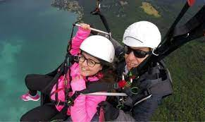
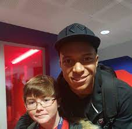

L'objectif de l'évènement Run In Color est de collecter des fonds pour l'association Rêves qui est une association qui permet aux enfants gravement malades de réaliser leurs rêves. Rêves est une association nationale à but non lucratif. Créée en 1994, elle permet d’offrir une parenthèse enchantée à un enfants qui ont besoin de rêver car quand le moral est bon tout est possible ! Plus de 6300 rêves ont été exaucés depuis la création de l’évènement. La prise en compte du mental dans le traitement de la maladie fait désormais partie intégrante du parcours de soin. L'association Rêves compte une trentaine de délégations départementales sur le territoire français. Elle travaille avec une soixantaine d'agences de santé, qui lui adressent des demandes de rêves d'enfants et d'adolescents. Chaque année plus de 4000 enfants sont touchés par une maladie grave. Le mental compte énormément pour lutter contre la maladie. En réalisant leurs vœux les plus fous, l’association leur permet de s’évader du quotidien et de vivre des expériences inoubliables qui les aident à reprendre confiance en l’avenir.
 